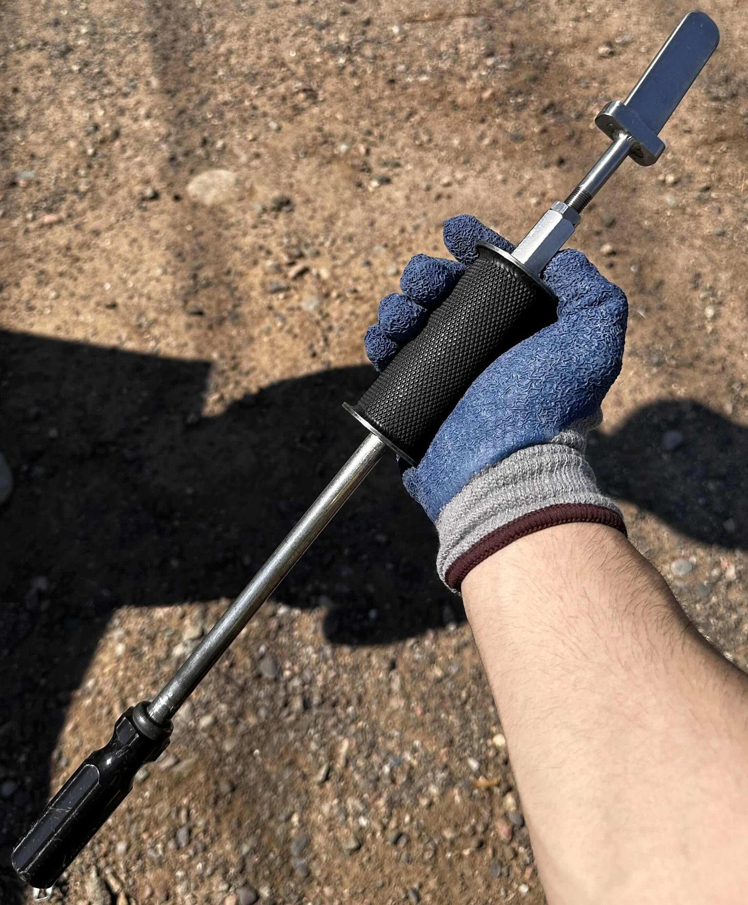
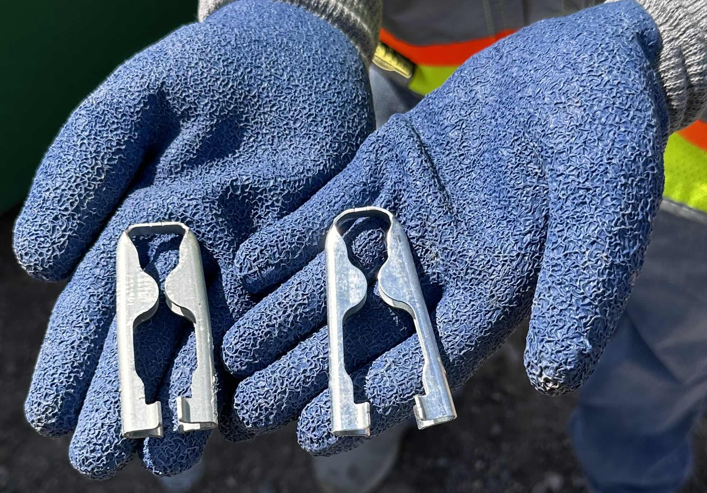

Overview: This custom-built tool streamlines the process of solar panel installation by combining automated positioning, ergonomic handling, and precision placement features. Designed as part of a robotics engineering project focused on renewable energy deployment.
Design Features
Mechanical arm with adjustable clamping for panel alignment
Integrated angle/tilt calibration system
Assistive user interface for guided installation steps
Foldable frame for portability and quick setup
Gallery

Original tool used by Array for manual solar installs.

Custom mounting bracket clips before redesign.Close-up of the clamping mechanism.